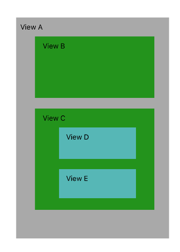
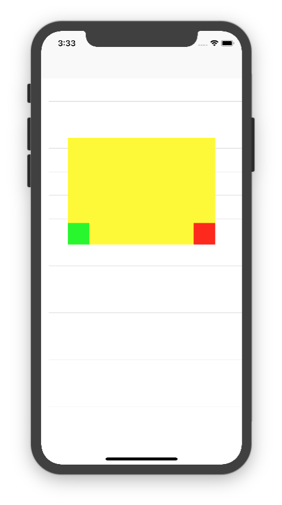

项目中的问题
在前段时间的项目中，遇到了一个与响应链相关的问题。效果图如下：
在默认状态下，最下方有五个按钮；当点击选中地图上的单车后，五个按钮会同时上移，并且导航视图也会跟着上移。如果是你你会如何去实现。
我的第一反应就是，将这些彼此有约束的按钮都放在一个自定义视图上，这样，当需要上移或者下移的时候，只需要改变这个自定义视图的frame即可。但是其实这样是有问题的。
首先，为了不让这个自定义视图遮盖住下面的地图，我将该视图的背景颜色改为clearColor。运行起来后，界面上没有问题，但是当我在自定义视图的透明区域滑动地图的时候，发现地图不会响应我的滑动事件。原因是该视图虽透明，但仍然遮盖在了地图上方，所以地图不会响应。虽然我知道原因，但是用户可不知道，当他发现下面部分不能滑动地图，就认为是bug了。。
我当时的解决办法
当时的我对于响应链的掌握处于知道是什么，却不会用的状态。由于时间紧迫，我只能采取一个“不太好”的方法。
我创建了一个管理下方视图的工具类，在工具类初始化的时候传入控制器的view，并在内部添加各种按钮。
这种方法其实和在控制器中添加一个个按钮没什么差别，现在只是将添加按钮的代码放到了工具类中，让控制器的代码能少点。
通过响应链来解决
在使用响应链之前，得知道响应链是怎么工作的。在接下来的文章中，我会先写响应链的相关知识，再写如何用这些相关知识去解决上面的问题。
什么是响应链
响应者链条：在iOS程序中无论是最后面的UIWindow还是最前面的某个按钮，它们的摆放是有前后关系的，一个控件可以放到另一个控件上面或下面，那么用户点击某个控件时是触发上面的控件还是下面的控件呢，这种先后关系构成一个链条就叫“响应者链”。也可以说，响应者链是由多个响应者对象连接起来的链条。在iOS中响应者链的关系可以用下图表示：
需要注意：
- 如果当前这个view是控制器的view,那么控制器就是上一个响应者
- 如果当前这个view不是控制器的view,那么父控件就是上一个响应者
响应链是如何工作的（工作步骤）
第一步、事件的产生
- 当点击其中一个视图的时候，系统会将该事件加入到一个由
UIApplication管理的事件队列中 - 取出队列里的最前面事件，分发处理
第二步、事件的传递
- 获取到需要处理的事件后，顺着响应链，向下查找最合适的视图。
第三步、事件的响应
- 找到最合适的视图后，会调用自己的touches方法处理事件。如果自身没有做处理（也就是自身没有重写touches方法），那么会逆着响应链，向上抛，直到找到能响应这个事件的视图。如果最上头的
UIApplication也不能处理该事件或消息，则将其丢弃。
实例讲解
我用一个简单的实例来讲解。在控制器中，添加若干个视图。如同所示：

当我点击视图D的时候，会发生些什么事情呢。
- 因为没有别的事件需要处理，会把这个点击事件拿出来处理。
- 开始顺着响应链查找最合适的响应视图 这里就是D视图
- D视图如果能响应这个事件就响应，如果不能上抛，到
UIApplication后还是不能就丢弃。
这里有几个问题需要说明。
这里的响应链是怎么样的
响应链如下图所示：
如何通过这个链条找到最合适的视图
在说这个之间先得知道，响应链里的每一个类都是继承UIResponder，而该类中有以下两个方法：1
2- (nullable UIView *)hitTest:(CGPoint)point withEvent:(nullable UIEvent *)event;
- (BOOL)pointInside:(CGPoint)point withEvent:(nullable UIEvent *)event;
当在找寻响应视图的时候，会先调用hitTest方法，这个方法的用途是返回一个最合适的视图。
在hitTest方法内部调用pointInside方法，这个方法的作用是点击的点是否在自身内部。
下面以实例说说：（因为UIApplication不好说，就以View A举例子）
- 当点击视图D以后，会先进入
View A的hitTest方法来寻找最合适的视图。 - 在
hitTest方法内部先判断是否View A隐藏、不能触发事件或者透明度<0.01。如果是，这返回nil，说明最合适的视图不在View A内部；反之，继续往下。 - 调用
pointInside方法，判断点是否在自身内部。如果不在内部，那么同样返回nil；反之，说明在View A内部，继续往下。 - 在
View A的子视图中，倒着找。(也就是先找E 再找D中)
这样可以试着写出hitTest方法：1
2
3
4
5
6
7
8
9
10
11
12
13
14
15
16- (UIView *)hitTest:(CGPoint)point withEvent:(UIEvent *)event {
if (!self.isUserInteractionEnabled || self.isHidden || self.alpha <= 0.01) {
return nil;
}
if ([self pointInside:point withEvent:event]) {
for (UIView *subview in [self.subviews reverseObjectEnumerator]) {
CGPoint convertedPoint = [subview convertPoint:point fromView:self];
UIView *hitTestView = [subview hitTest:convertedPoint withEvent:event];
if (hitTestView) {
return hitTestView;
}
}
return self;
}
return nil;
}
上述代码来源：iOS事件响应链中Hit-Test View的应用
那么示例中，点击D视图后，是怎么调用方法的呢？
我重写了A-E五个视图的hitTest和pointInside方法。1
2
3
4
5
6
7
8
9
10
11
12
13- (UIView *)hitTest:(CGPoint)point withEvent:(UIEvent *)event {
NSLog(@"进入A_View---hitTest withEvent ---");
UIView * view = [super hitTest:point withEvent:event];
NSLog(@"离开A_View--- hitTest withEvent ---hitTestView:%@",view);
return view;
}
- (BOOL)pointInside:(CGPoint)point withEvent:(nullable UIEvent *)event {
NSLog(@"A_view--- pointInside withEvent ---");
BOOL isInside = [super pointInside:point withEvent:event];
NSLog(@"A_view--- pointInside withEvent --- isInside:%d",isInside);
return isInside;
}
（ps:这里只需要调用super的对应方法，就可以让重写没有影响了。这句话什么意思呢：如果只是在重写方法中打印数据，那么就不会继续往下找了。而如果调用了super的对应方法，也就是UIView的方法，就会继续往下找，就不会影响到程序了。）
当我点击D后，打印结果如下：
最后找到了D视图。
找到视图后的响应是怎么回事
再找到视图后，会调用这个视图的touches方法。当这个视图有重写这些方法的时候，就说明这个视图能响应本次事件，如果这个视图不能响应，那么就会顺着响应链上抛，直到找到能响应这个事件的响应者。
举个栗子：
还是上面的示例，当我不写D视图的touches的方法，也就是D视图不能响应事件，那么会将这次响应上抛给C视图，如果我重写了C视图的touches方法后，会调用C视图的方法。
当我点击D视图后，调用的是C视图的touches，而当我点击E视图后，调用的是E视图的touches。
解决开始的问题
下面就可以来通过响应链解决开头的问题了。
最好的思路
我把开头的需求简化成了如下：

如果什么都不操作，只是在tableview上放一个yellow view，yellow view上放两个按钮，那么在黄色视图上滚动tableview是没有用的。
原因是这样的：
- 在
yellow view视图上 上下滑动tableview，事件产生并开始处理。 - 通过响应链查找最合适的响应视图
- 先是控制器view，发现点击位置在其内部
- 再是tableview，发现点击位置在其内部
- 再是
yellow view发现点击位置在其内部 - 最后是两个按钮，发现不在他们内部，那么找到最合适的视图为
yellow view。
- 那么由
yellow view来响应本次事件。
清楚过程后，只需要在进入yellow view的hitTest方法时，做一下处理，让其不是合适的响应视图即可。
具体如下：1
2
3
4
5
6
7
8- (UIView *)hitTest:(CGPoint)point withEvent:(UIEvent *)event
{
UIView *hitView = [super hitTest:point withEvent:event]; // 找到了最合适的视图
if (hitView && hitView == self) { // 当找到了并且是自己本身时候，返回nil，告诉上一级tableview，最合适的视图不在我内部
return nil;
}
return hitView;
}
逻辑如下：
- 进入控制器view，发现点击位置在其内部，那么往其子视图中找
- 发现只有tableview，并且进入发现点击位置在tableview中，说明最合适的响应视图要么是tableview，要么是tableview的子视图，在往tableview子视图中找找。
- 发现了
yellow view，发现了点击位置在yellow view中并且再找了其两个子视图按钮后发现yellow view正是这个最合适的视图。这个时候如果再不处理，系统默认会返回yellow view，那么tableview就没有机会响应了。但是返回了nil，告诉tableview，没找到最合适的，那么tableview就成了最合适的响应视图。
至于为什么要判断hitView == self呢，因为如果这次点击的是两个按钮，那么这里的hitView就是按钮了，如果仍然返回nil，那么按钮的响应也将无法触发。
最终效果：
另一个思路
这里还有另一个思路，那就是重写yellow view的pointInside方法，因为hitTest内部会调用pointInside来判断点击点是否是视图内部，如果不管三七二十一直接返回NO，那么这个视图将永远不会作为最合适的视图。因此，可以使用这个特性来实现效果：
判断一下点击点的位置，如果是两个按钮的位置，就返回YES，如果点击位置yellow view的黄色区域，就返回NO。
利用这个思路，还可以给小的按钮增加响应热区，给超出父视图的视图富裕响应能力等。